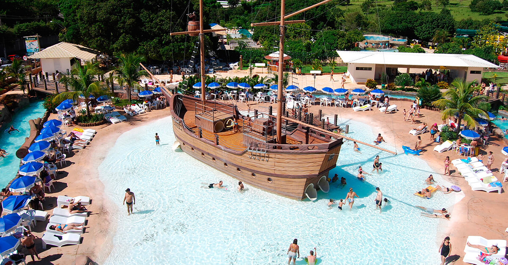

Caldas Novas

Caldas Novas é uma cidade no centro do Brasil conhecida pelos seus banhos termais. As suas piscinas naturais e artificiais vão de parques temáticos a spas. No centro, a Nossa Senhora das Dores é uma igreja bem preservada do século XIX. O Jardim Japonês é um parque paisagístico tranquilo. Na extremidade sudeste da cidade encontra-se o lago artificial de Corumbá. A sudeste, o Parque Estadual Serra de Caldas possui trilhos, quedas de água e uma avifauna variada.
Clique aqui para voltar